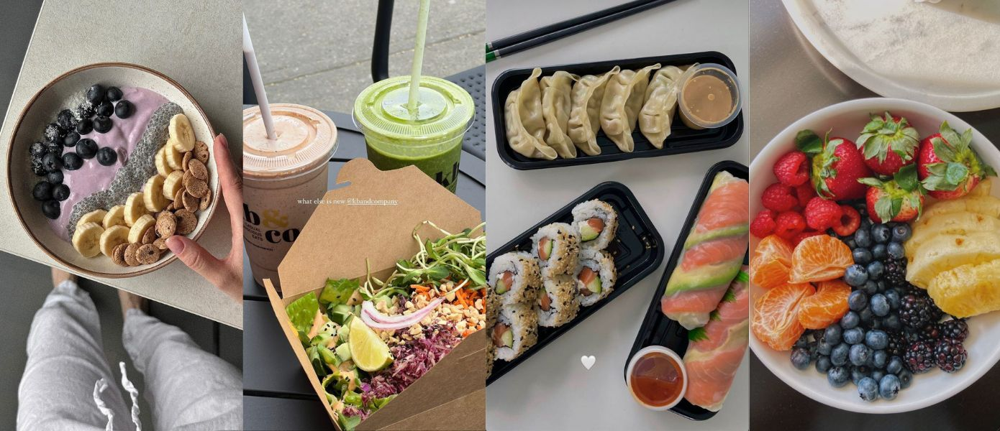
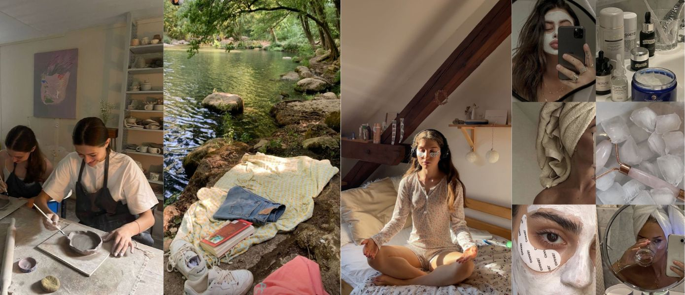

𝑭𝒊𝒏𝒅𝒊𝒏𝒈 𝑶𝒖𝒓 𝑩𝒂𝒍𝒂𝒏𝒄𝒆
Hey everyone! Balancing studies and life as a student nurse can be tough, right? I've found that setting boundaries and prioritizing self-care are key. Remember, it's okay to say no sometimes. Let's keep reminding ourselves that our well-being matters just as much as our patients'.

𝑺𝒕𝒂𝒚𝒊𝒏𝒈 𝑭𝒊𝒕 𝒐𝒏 𝒕𝒉𝒆 𝑮𝒐
With our hectic schedules, fitting in a workout seems impossible. But I've started doing 10-minute exercise routines at home or even at school during breaks. It's amazing how a little can go a long way in keeping us energized and healthy!
𝑬𝒂𝒕𝒊𝒏𝒈 𝑹𝒊𝒈𝒉𝒕 𝒇𝒐𝒓 𝑬𝒏𝒆𝒓𝒈𝒚
I've always found it challenging to maintain a healthy diet, particularly because my food preferences are quite selective. However, I've recently made a conscious effort to improve my nutrition by incorporating wholesome snacks into my routine, such as a variety of fruits and nuts, which are both nutritious and align with my tastes. Planning meals has been a game-changer for me. Sharing some of my quick, healthy recipes soon. Stay tuned!
𝑮𝒓𝒐𝒘𝒊𝒏𝒈 𝑬𝒗𝒆𝒓𝒚 𝑫𝒂𝒚
Personal growth is a journey, as a student nurses, we learn something new every day. I've been reflecting on my experiences and taking time for hobbies and education. It's been rewarding to grow not just in my career but as a person. What's something new you've learned recently?
𝑩𝒚 𝒔𝒉𝒂𝒓𝒊𝒏𝒈 𝒎𝒐𝒓𝒆 𝒂𝒃𝒐𝒖𝒕 𝒎𝒚 𝒋𝒐𝒖𝒓𝒏𝒆𝒚, 𝑰 𝒉𝒐𝒑𝒆 𝒕𝒐 𝒄𝒓𝒆𝒂𝒕𝒆 𝒂 𝒔𝒑𝒂𝒄𝒆 𝒘𝒉𝒆𝒓𝒆 𝒘𝒆 𝒄𝒂𝒏 𝒂𝒍𝒍 𝒍𝒆𝒂𝒓𝒏 𝒇𝒓𝒐𝒎 𝒆𝒂𝒄𝒉 𝒐𝒕𝒉𝒆𝒓 𝒂𝒏𝒅 𝒈𝒓𝒐𝒘 𝒕𝒐𝒈𝒆𝒕𝒉𝒆𝒓. 𝑾𝒉𝒆𝒕𝒉𝒆𝒓 𝒊𝒕'𝒔 𝒇𝒊𝒏𝒅𝒊𝒏𝒈 𝒃𝒂𝒍𝒂𝒏𝒄𝒆, 𝒔𝒕𝒂𝒚𝒊𝒏𝒈 𝒂𝒄𝒕𝒊𝒗𝒆, 𝒆𝒂𝒕𝒊𝒏𝒈 𝒘𝒆𝒍𝒍, 𝒐𝒓 𝒑𝒆𝒓𝒔𝒐𝒏𝒂𝒍 𝒈𝒓𝒐𝒘𝒕𝒉, 𝒓𝒆𝒎𝒆𝒎𝒃𝒆𝒓 𝒕𝒉𝒂𝒕 𝒆𝒗𝒆𝒓𝒚 𝒔𝒎𝒂𝒍𝒍 𝒔𝒕𝒆𝒑 𝒄𝒐𝒖𝒏𝒕𝒔. 𝑳𝒐𝒐𝒌𝒊𝒏𝒈 𝒇𝒐𝒓𝒘𝒂𝒓𝒅 𝒕𝒐 𝒉𝒆𝒂𝒓𝒊𝒏𝒈 𝒂𝒃𝒐𝒖𝒕 𝒚𝒐𝒖𝒓 𝒆𝒙𝒑𝒆𝒓𝒊𝒆𝒏𝒄𝒆𝒔 𝒂𝒏𝒅 𝒕𝒊𝒑𝒔 𝒂𝒔 𝒘𝒆𝒍𝒍. 𝑻𝒐𝒈𝒆𝒕𝒉𝒆𝒓, 𝒘𝒆 𝒄𝒂𝒏 𝒏𝒂𝒗𝒊𝒈𝒂𝒕𝒆 𝒕𝒉𝒆 𝒄𝒉𝒂𝒍𝒍𝒆𝒏𝒈𝒆𝒔 𝒂𝒏𝒅 𝒋𝒐𝒚𝒔 𝒐𝒇 𝒃𝒆𝒊𝒏𝒈 𝒔𝒕𝒖𝒅𝒆𝒏𝒕 𝒏𝒖𝒓𝒔𝒆𝒔.